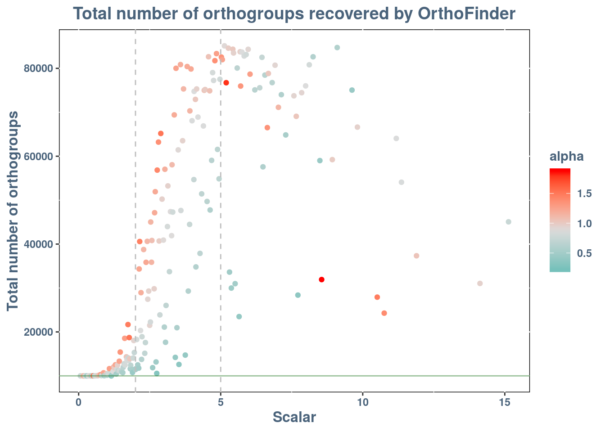
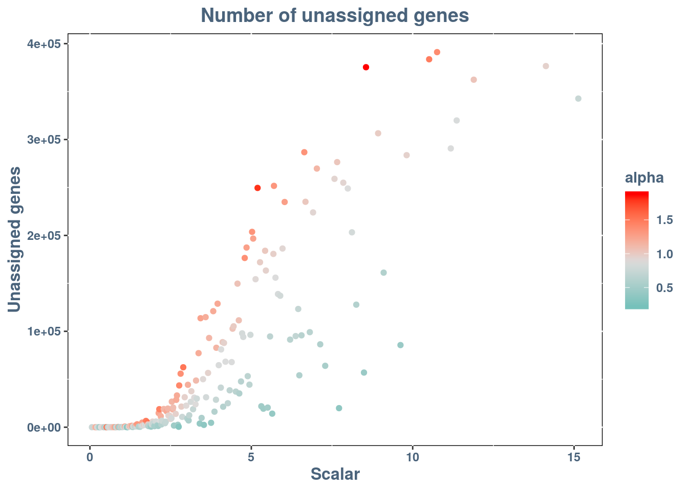
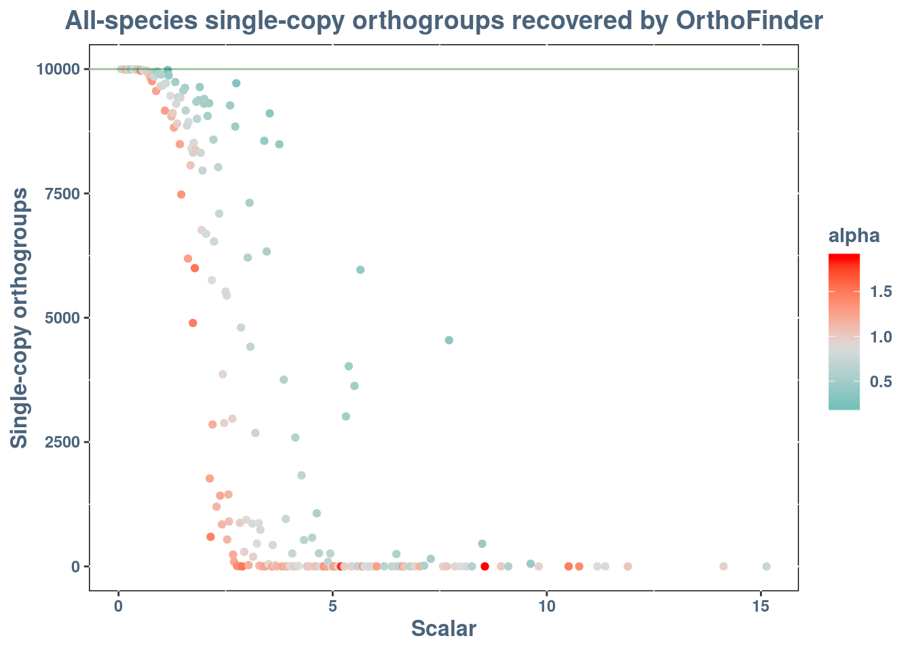
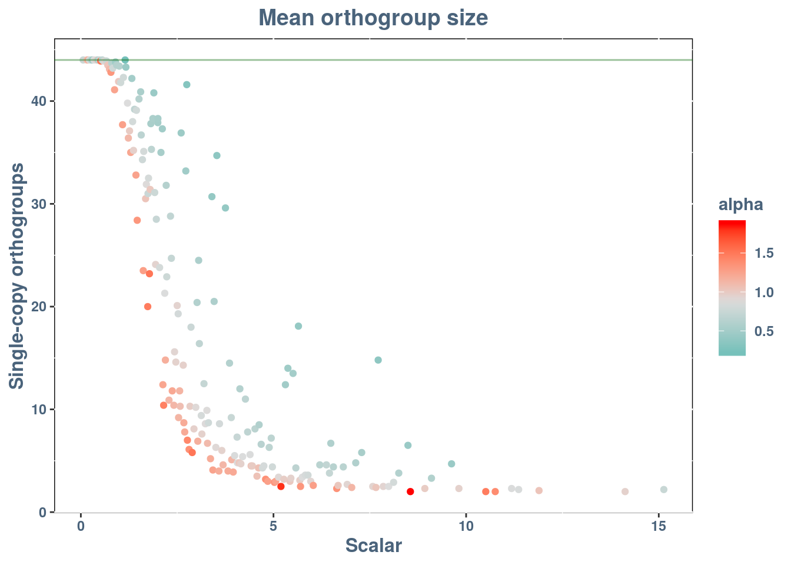

Last updated: 2019-12-26
Checks: 7 0
Knit directory: orthosims/
This reproducible R Markdown analysis was created with workflowr (version 1.6.0). The Checks tab describes the reproducibility checks that were applied when the results were created. The Past versions tab lists the development history.
Great! Since the R Markdown file has been committed to the Git repository, you know the exact version of the code that produced these results.
Great job! The global environment was empty. Objects defined in the global environment can affect the analysis in your R Markdown file in unknown ways. For reproduciblity it’s best to always run the code in an empty environment.
The command set.seed(20191226) was run prior to running the code in the R Markdown file. Setting a seed ensures that any results that rely on randomness, e.g. subsampling or permutations, are reproducible.
Great job! Recording the operating system, R version, and package versions is critical for reproducibility.
Nice! There were no cached chunks for this analysis, so you can be confident that you successfully produced the results during this run.
Great job! Using relative paths to the files within your workflowr project makes it easier to run your code on other machines.
Great! You are using Git for version control. Tracking code development and connecting the code version to the results is critical for reproducibility. The version displayed above was the version of the Git repository at the time these results were generated.
Note that you need to be careful to ensure that all relevant files for the analysis have been committed to Git prior to generating the results (you can use wflow_publish or wflow_git_commit). workflowr only checks the R Markdown file, but you know if there are other scripts or data files that it depends on. Below is the status of the Git repository when the results were generated:
working directory clean
Note that any generated files, e.g. HTML, png, CSS, etc., are not included in this status report because it is ok for generated content to have uncommitted changes.
These are the previous versions of the R Markdown and HTML files. If you’ve configured a remote Git repository (see ?wflow_git_remote), click on the hyperlinks in the table below to view them.
| File | Version | Author | Date | Message |
|---|---|---|---|---|
| Rmd | c4fbd5f | pnatsi | 2019-12-26 | Minor corrections in text |
| html | 7f6924c | pnatsi | 2019-12-26 | Build site. |
| Rmd | 6f75e0d | pnatsi | 2019-12-26 | Minor corrections in text |
| html | 966d7df | pnatsi | 2019-12-26 | Build site. |
| Rmd | b296a40 | pnatsi | 2019-12-26 | Added lines in plots |
| html | da25b98 | pnatsi | 2019-12-26 | Build site. |
| Rmd | 3bb4c7b | pnatsi | 2019-12-26 | Aligned plot titles in the center |
| html | 37f6b75 | pnatsi | 2019-12-26 | Build site. |
| Rmd | e5f009d | pnatsi | 2019-12-26 | Changed overview.Rmd title |
| html | 19eb57f | pnatsi | 2019-12-26 | Build site. |
| Rmd | 94b9260 | pnatsi | 2019-12-26 | Added plots and style.css |
| html | a49aa82 | pnatsi | 2019-12-26 | Build site. |
| Rmd | f7cd900 | pnatsi | 2019-12-26 | Cleans repo from artefacts |
| html | f7cd900 | pnatsi | 2019-12-26 | Cleans repo from artefacts |
| html | 2ae9d15 | pnatsi | 2019-12-26 | Build site. |
| Rmd | ddd270e | pnatsi | 2019-12-26 | Adds worfklowr yaml header to overview.Rmd |
| html | e1b3acc | pnatsi | 2019-12-26 | Build site. |
| Rmd | add35cb | pnatsi | 2019-12-26 | Renames report.Rmd to overview.Rmd |
Two genes are said to be orthologous if they originated from their common ancestor during an event of speciation, where a species splitting in two resulted in every single gene diverging in two copies. Instead, genes that their ancestry is based on a duplication event are called paralogous genes.
Identifying orthologous genes is an important step in many biological analyses, such as genome annotation, comparative genomics and phylogenomics. Specifically in phylogenomics, orthologous genes that are found in single copies (no duplication after speciation) across multiple species are most desired, because their evolutionary history can provide insights about speciation events and thus, evolutionary history of the species themselves.
Inferring orthology relationships among genes is not a trivial task. Various orthology inference methods have been developed, mostly involving sequence similarity and clustering. The accuracy of an orthology analysis is hard to assess because no ground truth can be known about the evolutionary history of genes.
It is common practice in evolutionary genomics to employ simulation experiments in order to verify and benchmark newly developed methods. In a simulation framework, sequences can evolve under a user-specified model where every parameter is known and controlled, and all required information can be recorded. Even if models are oversimplifying the true evolutionary events, simulations are often a valuable tool to understand the behaviour of new models and algorithms.
Here, simulation experiments are employed to assess the ability of OrthoFinder [1] to recover single-copy genes across metazoan species. Artificial Life Framework (ALF, [2]) is used to simulate genome evolution from 1 ancestral to 44 target genomes under a given guide tree. The 44 target genomes correspond to 44 real metazoan genomes and the guide tree represents the phylogenetic relationships of these animal species.
Multiple simulation experiments were performed under different evolutionary scenarios. Before each repeat, all branch lengths of the guide tree were multiplied by a scalar that increased or decreased the total tree length. This means that genomes and their genes will have less or more time to evolve, and thus orthologue genes will be more or less diverged from each other. In addition, in every simulation repeat a different alpha parameter for rate variation among sites was provided. This means that different sites of genes will accumulate mutations in different rates, determined by a gamma distribution with the given alpha parameter.
In each repeat, the starting genome comprised of 10,000 genes that evolved throughout the guide tree under the LG model exchangeabilities. Zero gene duplication and gene loss rates were specified, so each of the 44 resulting proteomes will also contain 10,000 single-copy genes. Every gene from one proteome will have exactly one orthologue in each of the rest 43 proteomes, for a total of 10,000 single-copy groups of orthologues with 44 genes each.
Orthofinder was applied in the simulated proteomes and the expected result was to recover 10,000 single-copy orthogroups with 44 genes each. Any deviation from this will be due to OrthoFinder’s inability to correctly recover a fraction of these groups. In the end, the goal of this work is to assess OrthoFinder’s performance in recovering metazoan single-copy orthologues in relation to how divergent these are from each other. This is of great interest because there are known instances of Metazoa species that evolve in faster rates than others, so their orthologue genes will be more divergent compared to slower-evolving species. Nevertheless, correctly identifying orthology relationships is critically important in the context of reconstructing the animal Tree of Life.
Evolution from one ancestral to 44 terminal proteomes under a given guide tree was simulated using ALF. Different simulation experiments were performed under 200 evolutionary scenarios, each time resulting in 44 proteomes with 10,000 genes each. In each of the 200 repeats, the guide tree was down- or up-scaled to allow for less or more evolutionary time, and also a different parameter for rate variation among sites (alpha) was given.
OrthoFinder was applied to each of the 200 44-proteome simulated datasets and various result metrics were recorded, such as the total number of resulting orthogroups, the number of genes not assigned to any orthogroup, the mean orthogroups size etc. The results are summarised in the following dataframe:
library(DT)
ortho_results <- data.table::fread("data/orthosims_stats.csv")
DT::datatable(ortho_results, fillContainer = FALSE, extensions = c('FixedColumns','Scroller'), options = list (scrollX = TRUE, dom = 'RMDCT<"clear">lfrtip'))There are 9 columns in this matrix:
In the controlled environment of simulations, various aspects of the evolutionary process that are not known in real world can be recorded. This knowledge provides a basis on which the accuracy of methods, algorithms and software can be assessed. In our example, the “true” result of the evolution is 10,000 single-copy groups of orthologues, contaning 44 genes each. We can assess OrthoFinder’s accuracy under different simulation settings by comparing the resulting orthogroups to this expected result.
Let’s see first how much the number of estimated orthogroups deviated from the expected 10,000 under different combinations of guide tree length and alpha parameter for rate variation among sites:
library(ggplot2)
scalar_plot <- ggplot2::ggplot(data = ortho_results,
aes( x = scalar,
y = orthogroups,
color = alpha, )) +
geom_point() +
labs(
title = "Total number of orthogroups recovered by OrthoFinder",
x = "Scalar",
y = "Total number of orthogroups") +
theme(text = element_text(family = 'Helvetica',color = "#4A637B",face = "bold")
,axis.title.x = element_text(size = 12)
,axis.title.y = element_text(size = 12)
,axis.text.x = element_text(color = "#4A637B")
,axis.text.y = element_text(color = "#4A637B")
,plot.title = element_text(size = 14,hjust = 0.5 )
,plot.subtitle = element_text(size = 7,hjust = 1,face = "italic")
,plot.caption = element_text(size = 7)
,panel.background = element_rect(fill = "white", colour = "black", size = 0.5, linetype = "solid")) +
scale_color_gradient2(midpoint = mean(ortho_results$alpha),
low = "#20B2AA",
mid = "#DCDCDC",
high = "red",
space = "Lab") +
geom_vline(xintercept = 2, linetype = 2, colour = "grey") +
geom_vline(xintercept = 5, linetype = 2, colour = "grey") +
geom_hline(yintercept = 10000, linetype = 1, colour = "#006400", alpha = 0.4)
scalar_plot
This plot can be divided in three regions, in respect to the scalar that guide tree length is multiplied before simulation. For scalars <2 the number of inferred orhtogroups does not deviate much from 10,000 regardless of the alpha value. For scalars between 2-5 there is much variance between results for the same scalar, depending on the value of the alpha paramaters. Larger alphas lead to greater number of orthogroups for the same scalar. However, the estimated number of orthogroups never goes beyond 85,000. For scalars >5 the results become mixed. As it can be seen in the bottom-right part of the scatterplot, large scalars and large alphas can drop the estimated number of orthogroups closer to 10,000. What does this mean? Let’s see the number of unassigned genes plot to help us understand what is going on:
library(ggplot2)
scalar_plot <- ggplot2::ggplot(data = ortho_results,
aes( x = scalar,
y = unassigned_genes,
color = alpha, )) +
geom_point() +
labs(
title = "Number of unassigned genes",
x = "Scalar",
y = "Unassigned genes") +
theme(text = element_text(family = 'Helvetica',color = "#4A637B",face = "bold")
,axis.title.x = element_text(size = 12)
,axis.title.y = element_text(size = 12)
,axis.text.x = element_text(color = "#4A637B")
,axis.text.y = element_text(color = "#4A637B")
,plot.title = element_text(size = 14,hjust = 0.5 )
,plot.subtitle = element_text(size = 7,hjust = 1,face = "italic")
,plot.caption = element_text(size = 7)
,panel.background = element_rect(fill = "white", colour = "black", size = 0.5, linetype = "solid")) +
scale_color_gradient2(midpoint = mean(ortho_results$alpha),
low = "#20B2AA",
mid = "#DCDCDC",
high = "red",
space = "Lab") +
geom_hline(yintercept = 0, linetype = 1, colour = "#006400", alpha = 0.4)
scalar_plot
Here the trend becomes clearer. For shorter guide trees almost all genes are assigned to some orthogroup but as the guide tree become larger, the number of unassigned genes is analogous to the alpha parameter. For the same guide tree length, larger alpha leads to more genes not placed in any orthogroup, probably because they evolved faster than their orthologues and became so divergent that their relationship could not be recognised by OrthoFinder anymore. We can see now that for large guide trees and large alphas (top-right corner), almost 400,000 of the 440,000 genes were left without an orthogroup. So, the small number of orthogroups that was observed in the previous plot for this setting was seen because the majority of the input genes were too distant from each other to be placed in an orthogroup.
Another interesting thing to look at is how many of the recovered orthogroups are all-species single-copy:
library(ggplot2)
scalar_plot <- ggplot2::ggplot(data = ortho_results,
aes( x = scalar,
y = all_species_single_copy,
color = alpha, )) +
geom_point() +
labs(
title = "All-species single-copy orthogroups recovered by OrthoFinder",
x = "Scalar",
y = "Single-copy orthogroups") +
theme(text = element_text(family = 'Helvetica',color = "#4A637B",face = "bold")
,axis.title.x = element_text(size = 12)
,axis.title.y = element_text(size = 12)
,axis.text.x = element_text(color = "#4A637B")
,axis.text.y = element_text(color = "#4A637B")
,plot.title = element_text(size = 14,hjust = 0.5 )
,plot.subtitle = element_text(size = 7,hjust = 1,face = "italic")
,plot.caption = element_text(size = 7)
,panel.background = element_rect(fill = "white", colour = "black", size = 0.5, linetype = "solid")) +
scale_color_gradient2(midpoint = mean(ortho_results$alpha),
low = "#20B2AA",
mid = "#DCDCDC",
high = "red",
space = "Lab") +
geom_hline(yintercept = 10000, linetype = 1, colour = "#006400", alpha = 0.4)
scalar_plot
Here the expected value is 10,000 since this is the number of genes in the starting proteome of the simulated evolution, and no gene duplications or losses are allowed. We see that only when these initial genes evolve for very little time we are able to estimate a total number of single-copy groups that approximates the desired value. As guide trees grow larger, these estimates quickly become dependent on the alpha paramter of rate variation among sites. For larger alphas, we lose ability to recover even 25% of the desired amount of single-copy orthogroups when the scaler becomes >2.5. For smaller alphas, we are able to recover more than half of the 10,000 single-copy orthogroups for scalars < 5.
Now let’s look at the last plot, which shows how mean orthogroup size varies among simulations:
library(ggplot2)
scalar_plot <- ggplot2::ggplot(data = ortho_results,
aes( x = scalar,
y = mean_orthogroup_size,
color = alpha, )) +
geom_point() +
labs(
title = "Mean orthogroup size",
x = "Scalar",
y = "Single-copy orthogroups") +
theme(text = element_text(family = 'Helvetica',color = "#4A637B",face = "bold")
,axis.title.x = element_text(size = 12)
,axis.title.y = element_text(size = 12)
,axis.text.x = element_text(color = "#4A637B")
,axis.text.y = element_text(color = "#4A637B")
,plot.title = element_text(size = 14,hjust = 0.5 )
,plot.subtitle = element_text(size = 7,hjust = 1,face = "italic")
,plot.caption = element_text(size = 7)
,panel.background = element_rect(fill = "white", colour = "black", size = 0.5, linetype = "solid")) +
scale_color_gradient2(midpoint = mean(ortho_results$alpha),
low = "#20B2AA",
mid = "#DCDCDC",
high = "red",
space = "Lab") +
geom_hline(yintercept = 44, linetype = 1, colour = "#006400", alpha = 0.4)
scalar_plot
Again the trend is clear. Here, the expected value is 44, equal to the number of species used in the simulations. In smaller scalars, the mean size of each orthogroup is very close to 44. As guide trees become longer, the mean orthogroup size depends highly on the value of the alpha parameter, until we get to scalars >8 where mean sizes are <5 no matter the value of alpha.
It is clear that when orthologous genes become too divergent, either because they evolve faster or because they evolve for more time, OrthoFinder becomes less and less able to correctly recover our 10,000 44-species single-copy orthogroups. Even though the data used come from simulations which oversimplifies true events, the remarks made will most likely hold for real data as well. Events such as gene duplication, gene loss, horizontal gene transfer, incomplete lineage sorting etc. complicate the real evolutionary process and make the accurate inference of single-copy orthogroups much more than in the “ideal” simulation environment.
More things that would be interesting to look at in the results of OrthoFinder in simulated proteomes are:
How many orthogroups are recovered per species and how many genes from each species stay unassigned. It would be interesting to see how OrthoFinder deals with genes from faster-evolving species compared to slower-evolving ones. Since the 44 simulated species are directly linked to real metazoan species, we can see in which groups of animals OrthoFinder becomes more sensitive.
Apart from looking just at the mean orthogroup size of each run, it would be interesting to look at the whole distribution of orthogroup sizes, and how lumped together or fragmented they are under different simulation settings. This pattern can be directly linked to gene content phylogeny, since as orthogroups start to get more fragmented, this split might be phylogenetically informative in the context of gene presence/absence.
[1] Emms DM, Kelly S (2019) “OrthoFinder: phylogenetic orthology inference for comparative genomics” Genome Biol 20(1):238
[2] Dalquen DA, Anisimova M, Gonnet GH, Dessimoz C (2012) “ALF - A simulation framework for genome evolution” Mol Biol Evol 29(4):1115-1123
sessionInfo()R version 3.6.0 (2019-04-26)
Platform: x86_64-pc-linux-gnu (64-bit)
Running under: Ubuntu 16.04.6 LTS
Matrix products: default
BLAS: /usr/lib/atlas-base/atlas/libblas.so.3.0
LAPACK: /usr/lib/atlas-base/atlas/liblapack.so.3.0
locale:
[1] LC_CTYPE=C.UTF-8 LC_NUMERIC=C LC_TIME=C.UTF-8
[4] LC_COLLATE=C.UTF-8 LC_MONETARY=C.UTF-8 LC_MESSAGES=C.UTF-8
[7] LC_PAPER=C.UTF-8 LC_NAME=C LC_ADDRESS=C
[10] LC_TELEPHONE=C LC_MEASUREMENT=C.UTF-8 LC_IDENTIFICATION=C
attached base packages:
[1] stats graphics grDevices utils datasets methods base
other attached packages:
[1] ggplot2_3.2.1 DT_0.11 workflowr_1.6.0
loaded via a namespace (and not attached):
[1] Rcpp_1.0.3 pillar_1.4.2 compiler_3.6.0 later_1.0.0
[5] git2r_0.26.1 base64enc_0.1-3 tools_3.6.0 digest_0.6.23
[9] tibble_2.1.3 jsonlite_1.6 evaluate_0.14 lifecycle_0.1.0
[13] gtable_0.3.0 pkgconfig_2.0.3 rlang_0.4.2 shiny_1.4.0
[17] crosstalk_1.0.0 yaml_2.2.0 xfun_0.11 fastmap_1.0.1
[21] withr_2.1.2 dplyr_0.8.3 stringr_1.4.0 knitr_1.26
[25] fs_1.3.1 htmlwidgets_1.5.1 tidyselect_0.2.5 rprojroot_1.3-2
[29] grid_3.6.0 glue_1.3.1 data.table_1.12.8 R6_2.4.1
[33] rmarkdown_2.0 farver_2.0.1 purrr_0.3.3 magrittr_1.5
[37] whisker_0.4 backports_1.1.5 scales_1.1.0 promises_1.1.0
[41] htmltools_0.4.0 assertthat_0.2.1 mime_0.7 xtable_1.8-4
[45] colorspace_1.4-1 httpuv_1.5.2 labeling_0.3 stringi_1.4.3
[49] lazyeval_0.2.2 munsell_0.5.0 crayon_1.3.4